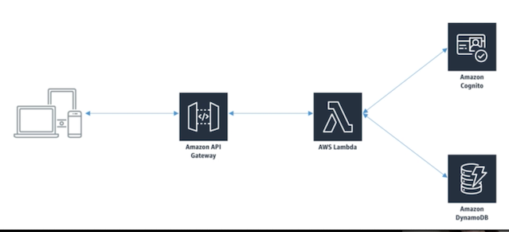

L1 AWS Lambda
Serverless Data processing
1、What is Lambda?
- A way to run code snippets "in the cloud"
- Serverless
- Continuous scaling
- Often used to process data as it's moved around
- Some services don't talk directly to other services in AWS but lambda can be used as the glue between these services
- So it can sit there and get triggered by some other service sending data into it like a Kinesis data stream reformat that information into a format required by some other service send that data to another service for further processing and maybe retrieve that data and send it back.
2、Example: Serverless Website

- Build your Web site by just having static html and ajax calls embedded within that html well you can serve that from S3
- You have an API Gateway in Amazon it sort of serves as the wall between the outside clients and you the the interior of your system there.
- User Log in request go through the API Gateway which in turn would then get sent off to AWS Lambda Lambda would say OK the Web site wants this person to log in
- It could turn around and craft request to Amazon Cognito to say do you authenticate this user or not Amazon Cognito will come back and say Sure here's your token lambda could then format that result and send it back to the Web site.
- Or It would then turn around craft that request a DynamoDB for that chat history.
- Talk to DynamoDB to get that and then send it back through the API Gateway back to the Web site.
3、Example: Transcation rate alarm
- Kinesis data stream that's receiving events it says something weird is going on that requires someone's attention.
- Lambda is going to be triggered by those data stream events
- Lambda will then turn around and craft an SNS request to actually send out a message to your cell phone notifying you that something requires our attention.
4、Lambda Integration
4-1 Why not just run a server?
- Server management (patches, monitoring, hardware failures, etc.)
- Servers can be cheap, but scaling gets expensive really fast
- You don't pay for processing time you don't use
- Easier to split up development between front-end and back-end
4-2 Main uses of Lambda
- Real-time file processing
- Real-time stream processing
- ETL
- Cron replacement
- Process AWS events
4-3 Supported languages
- Node.js
- Python
- Java
- C#
- Go
- Powershell
- Ruby
4-4 Lambda triggers
- DynamoDB table that can trigger event data that invokes a lambda function as well and that allows for real time event driven data processing for the data arriving in dynamo DB tables
- You can integrate lambda with Kinesis streams and then the lambda function can read records from a stream and be processed accordingly
- Kinesis isn't actually pushing that data into lambda as the architectural diagrams might suggest lambda actually pulls that stream periodically and collects information from it in a batch manner.
4-5 Lambda and Amazon ElasticSearch Service
- data being sent into Amazon S3 like a data lake
- object creation in S3 can then trigger off a lambda function
- lambda function processes that data and send to the Amazon Elastic search service.
4-6 Lambda and Data Pipeline

- Object comes into S3 and we might trigger in a lambda function there to process that data
- Kick off a data pipeline to process that data further.
Normally data pipeline you can schedule activities where you can define preconditions that see whether or not data exists on S3 and then allocate resources accordingly.
But by using lambda that's a better mechanism because data pipeline can be activated at any random time and not on a fixed schedule.
4-7 Lambda and Redshift
We're going to copy data in one record at a time we could just do that by having a trigger from S3 that says OK some new data was received in S3 lambda go deal with it your lambda function will turn around and Insert that into your redshift database but that's not very efficient
It's better batch things up and send it in together in a parallel manner.
The problem here is that lambda cannot have any stateful information so there's no way to pass information from one call of lambda to another.
The reason being that your lambda function could be deployed on many different servers all running concurrently at the same time.
- S3 as triggering off an event a Lambda Lambda
- Using dynamo DB to keep track of how much data has been received so far.
- When hit some threshold we'll batch that up and actually copy it into redshift altogether at once.
4-8 Lambda + Kinesis [exam]
-
Your Lambda code receives an event with a batch of stream records
- You specify a batch size when setting up the trigger (up to 10,000 records)
- Too large a batch size can cause timeouts!
- Batches may also be split beyond Lambda's payload limit (6 MB)
-
Lambda will retry the batch until it succeeds or the data expires
- This can stall the shard if you don't handle errors properly
- Use more shards to ensure processing isn't totally held up by errors
- Lambda processes shard data synchronously
5、Lambda Costs, Promises, and Anti-Patterns
5-1 Cost Model
- "Pay for what you use"
- Generous free tier (1M requests / month, 400K GB-seconds compute time)
$0.2/ million requests$.00001667per GB/second
5-2 Other promises
- High availability
- Unlimited scalability
- High performance
- But you do specify a timeout! This can cause problems. Max is 900 seconds.
If you're trying to do something in a lambda function that takes more than 900 seconds lambda is not the tool for you or maybe you need to reduce your batch size to reduce the load of that individual function call.
5-3 Anti-patterns
- Long-running applications
You should be using EC2 instead or you can also chain multiple lambda functions together.
- Dynamic websites
EC2 and Cloud Front is a better choice for a building dynamic web sites.
- Stateful applications
You can't maintain information from one lambda call to another. Like we said it is stateless but you can store state information in DynamoDB or S3